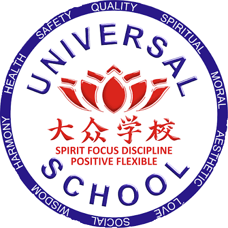

Universal School

2013-2022
Universal School Denpasar adalah sekolah nasional plus yang menghadirkan pendidikan berkualitas dengan pendekatan global dan berakar pada nilai karakter. Menyelenggarakan jenjang TK, SD, dan SMP, kami berkomitmen menciptakan lingkungan belajar yang aman, inklusif, dan inspiratif. Dengan program unggulan pembelajaran Bahasa Mandarin setiap hari, siswa dibekali kemampuan bahasa internasional sejak dini.